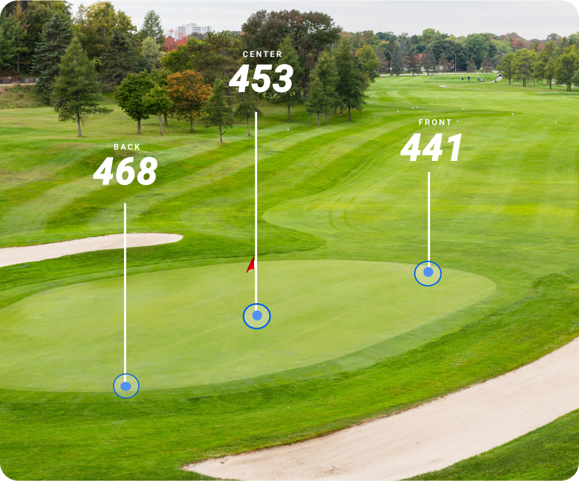
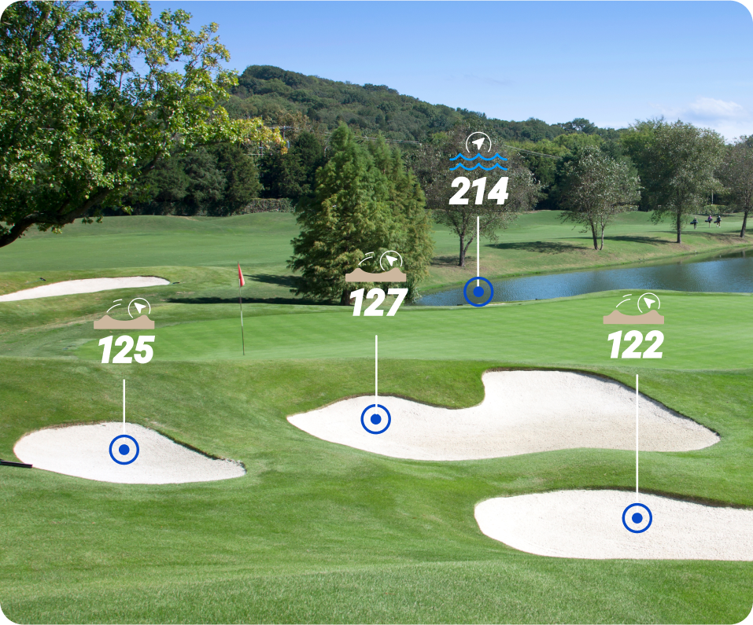
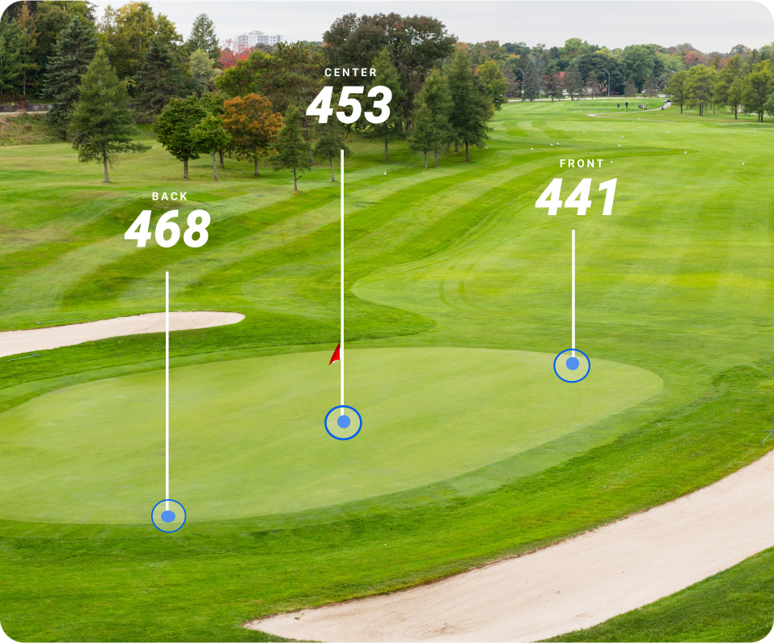
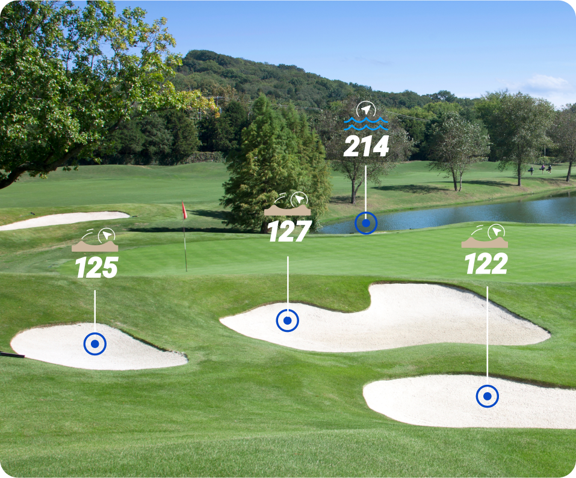

ADVANCED COURSE VIEW
Get the full picture. PlayMaker+ offers a detailed course View with greens, hazards. and even club recommendations to give you a strategic edge. Know your surroundings and plan every shot with precision.
FRONT/CENTER/BACK DISTANCES
Dial in every approach shot. The PlayMaker+ gives you precise Front, Center, and Back distances to the green, empowering you to make smarter, more confident club selections every time.
GREEN COMPASS
Never lose your direction. The PlayMaker+'s Green Compass feature points you straight to the green from any position, letting you plan your shots with confidence.
ADVANCED SHOT TRACKING
Measure every shot, track every stat. The PlayMaker+ automatically records and uploads shot distances and performance data your personalized POST GAME dashboard, providing valuable insights to help you improve and lower your scores.
DYNAMIC HAZARD DISTANCES
Never lose your direction. The PlayMaker+'s Green Compass feature points you straight to the green from any position, letting you plan your shots with confidence.
SCOREKEEPING
See your current score, total strokes, and longest drive—all updated in real time. It's your round at a glance, perfectly organized to help you stay focused, informed, and ready to crush your goals on every hole.
REAL-TIME WEATHER
Stay ahead of the elements. With real-time weather updates, including temperature and precipitation, PlayMaker+ helps you adjust your strategy to match the conditions.
ACTIVITY TRACKING
Track more than just steps. The PlayMaker+ acts as your ultimate golf activity monitor, recording your round with a built-in timer while keeping tabs on calories burned and overall movement. Whether you're golfing or off the course, PlayMaker+ keeps up with your active lifestyle.


 


